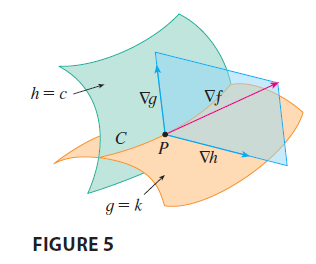

Suppose now that we want to find the maximum and minimum values of a function \(f(x, y, z)\) subject to two constraints (side conditions) of the form \(g(x, y, z) = k\) and \(h(x, y, z) = c\). Geometrically, this means that we are looking for the extreme values of \(f\) when \((x, y, z)\) is restricted to lie on the curve of intersection \(C\) of the level surfaces \(g(x, y, z) = k\) and \(h(x, y, z) = c\). Suppose \(f\) has such an extreme value at a point \(P(x_0, y_0, z_0)\). We know that \(\nabla f\) is orthogonal to \(C\) at \(P\). But we also know that \(\nabla g\) and \(\nabla h\) are orthogonal to \(C\) at \(P\). This means that the gradient vector \(\nabla f(x_0, y_0, z_0)\) is in the plane determined by \(\nabla g(x_0, y_0, z_0)\) and \(\nabla h(x_0, y_0, z_0)\). (We assume that these gradient vectors are not zero and not parallel.) So there are numbers \(\lambda\) and \(\mu\) (called Lagrange multipliers) such that \[ \nabla f(x_0, y_0, z_0) = \lambda \nabla g(x_0, y_0, z_0) + \mu \nabla h(x_0, y_0, z_0) \] In this case Lagrange’s method is to look for extreme values by solving five equations in the five unknowns \(x, y, z, \lambda,\) and \(\mu\). These equations are obtained by writing Equation 16 in terms of its components and using the constraint equations: \[ f_x = \lambda g_x + \mu h_x \] \[ f_y = \lambda g_y + \mu h_y \] \[ f_z = \lambda g_z + \mu h_z \] \[ g(x, y, z) = k \] \[ h(x, y, z) = c \]